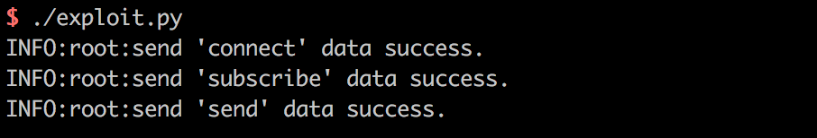

Spring Messaging Remote Code Execution (CVE-2018-1270)¶
Spring Messaging provides messaging support for the Spring framework, with STOMP as its upper-layer protocol and SockJS as its underlying communication layer.
In Spring Messaging, clients are allowed to subscribe to messages and filter them using selectors. These selectors are written in SpEL (Spring Expression Language) and parsed using StandardEvaluationContext, which leads to a remote code execution vulnerability.
Reference links:
- https://pivotal.io/security/cve-2018-1270
- https://xz.aliyun.com/t/2252
- https://cert.360.cn/warning/detail?id=3efa573a1116c8e6eed3b47f78723f12
- https://github.com/CaledoniaProject/CVE-2018-1270
Vulnerability Environment¶
Execute the following command to start a vulnerable Web application based on Spring Messaging 5.0.4:
docker compose up -d
After the server starts, visit http://your-ip:8080 to see a web page.
Vulnerability Reproduce¶
While many articles state that Spring Messaging is based on WebSocket communication, this is not entirely accurate. Spring Messaging is based on SockJS (which can be understood as a communication protocol), and SockJS adapts to different browsers: modern browsers use WebSocket communication, while older browsers use AJAX communication.
The process of connecting to the backend server can be understood as:
- Using the STOMP protocol to combine data into a text stream
- Using the SockJS protocol to send the text stream, where SockJS chooses an appropriate channel (WebSocket or XHR/HTTP) to communicate with the backend
Therefore, we can use HTTP to reproduce the vulnerability, which we call a "downgrade attack".
I have written a simple POC script exploit.py (requires Python 3.6 or higher to execute). Since this vulnerability involves inserting a SpEL expression during subscription, and it is only triggered when a message is sent to this subscription, we need to specify the following information:
- Base URL, which in Vulhub is
http://your-ip:8080/gs-guide-websocket - The SpEL expression to execute, such as
T(java.lang.Runtime).getRuntime().exec('touch /tmp/success') - A subscription address, which in Vulhub is:
/topic/greetings - How to trigger this subscription, i.e., how to make the backend send a message to this subscription. In Vulhub, we send a JSON containing a name to
/app/helloto trigger this event. Of course, this would be different in real-world scenarios, so this POC is not universally applicable.
Modify the POC according to your needs. If you're using the Vulhub environment, you only need to modify the URL in step 1.
Execute:

Enter the container with docker compose exec spring bash, and you can see that /tmp/success has been successfully created: